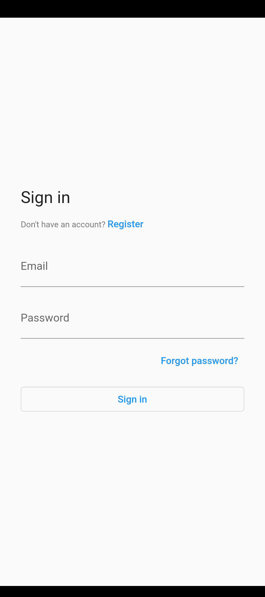
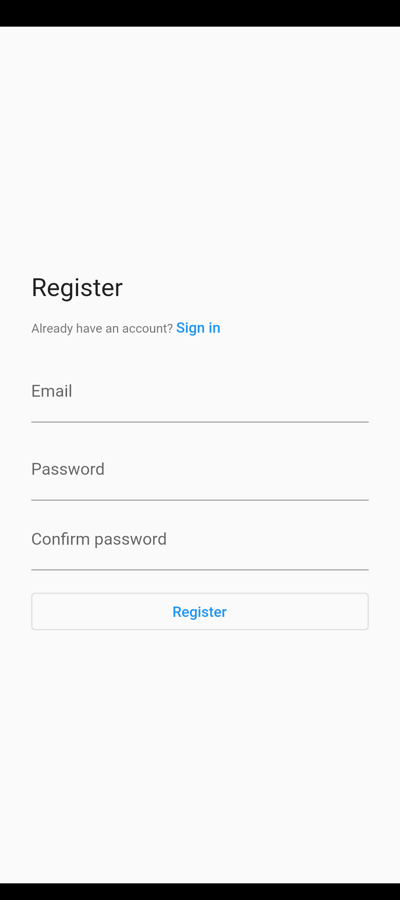
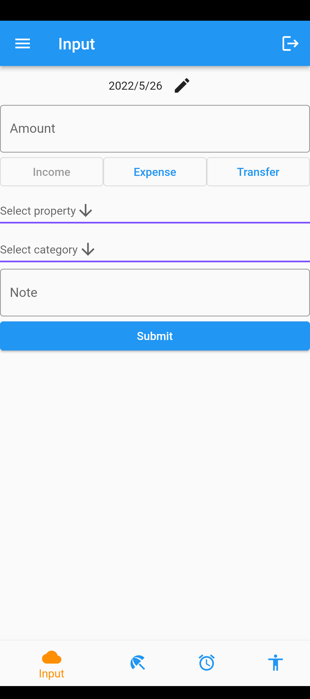
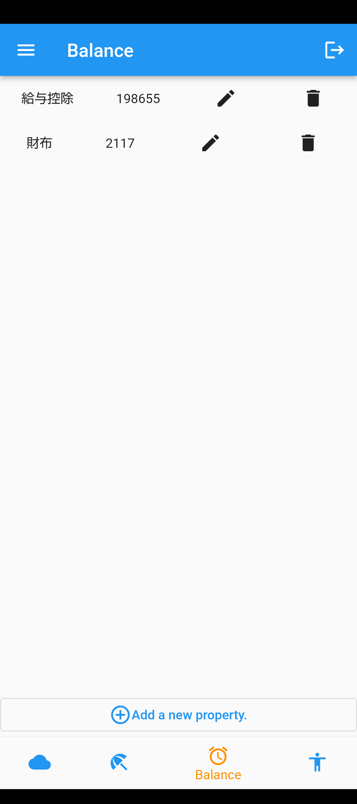
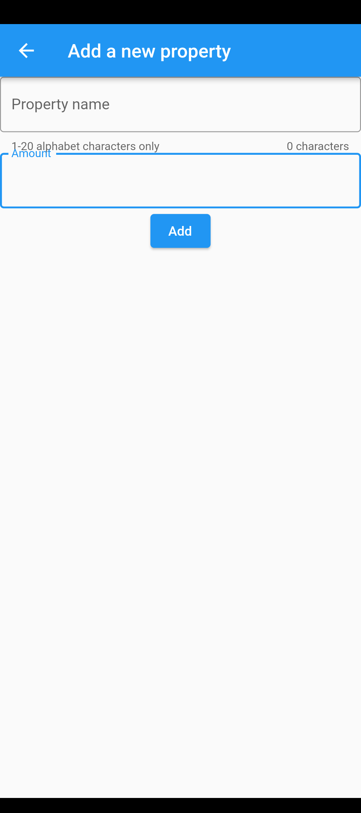
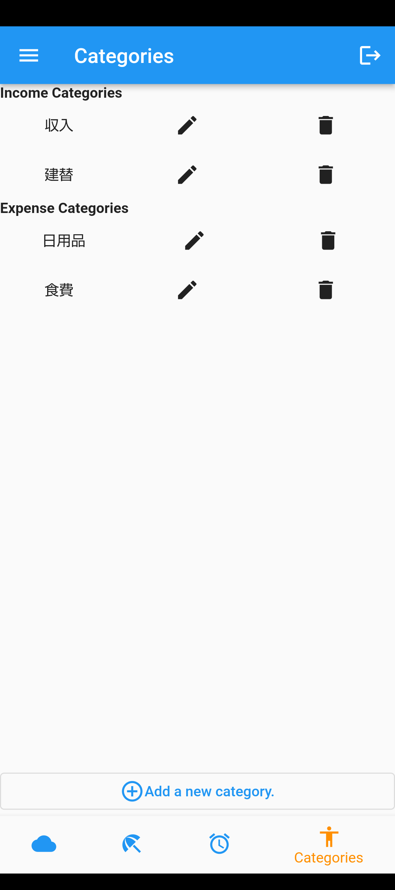
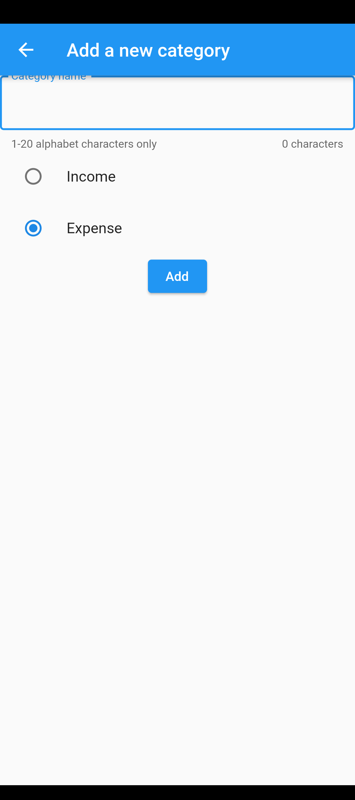
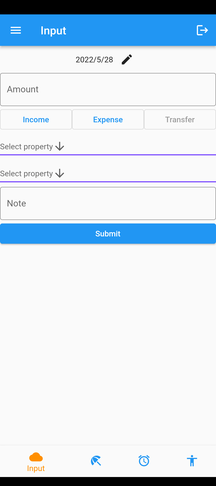

アプリをインストールしてから家計簿を使うまでの流れについて説明しています。
アプリを起動したらまず、ユーザ登録が必要です。ユーザ登録に使用するメールアドレスはダミー（例：abcdef@example.com。abcdefの部分は好きな文字に変えてOK）でも、普段遣いのものでも問題ありません。
初めてアプリを起動したら、次の画面が表示されます。 "Sign in"の下に表示されている文の右側にあるRegisterをタップしてください。

Registerをタップすると次の画面が表示されます。 この画面でユーザ登録を行います。 メールアドレス、パスワード、パスワード（確認用）を上から順に入力し、一番下のRegisterボタンをタップしてください。

注意1：パスワードは6文字以上である必要があります。
注意2：@example.comのメールアドレスを使用してユーザ登録した場合、「サイトまたはアプリでのデータ侵害により、パスワード情報が漏洩しました。今すぐカケーボαでパスワードを変更することをおすすめします。」と表示されることがあります。問題はないので、「このパスワードをかけーぼαで次回から表示しない」にチェックを入れて「OK」をタップしてください。（ページの一番下にこの現象について補足をしています）
注意3：普段遣いのメールアドレスを使用してユーザ登録し、注意2で言及しているメッセージが表示された場合は注意してください。そのメールアドレスを使用してユーザ登録した他のアプリやサービスでアカウントのパスワードが（時期はわかりませんが）過去に漏洩しています。そのメールアドレスを使用しているアカウントすべてのパスワードを変更することをおすすめします。
次の画面が表示された場合、ユーザ登録は成功です。

次の画面で、ユーザ登録時に使用したメールアドレスとパスワードを入力し、"Sign in"ボタンをタップしてください。
家計簿の記録をつけ始める前に、まず資産と収入・支出のカテゴリの登録をする必要があります。
画面の下にある4つ並んだアイコンのうち、右から二番目（時計のアイコン）をタップします。 すると、次の画面が表示されます。 画像は私がテスト中にスクショしたものなので、すでに2種類の資産が登録されています。 初めてこの画面を開いたときは、資産が何も登録されていないのでなにも表示されません。

資産を新規登録するためには画面下部にある「Add a new property」ボタンをタップします。 すると、次の画面が表示されます。

この画面で、以下の手順を行ってください。
これで資産の登録は終わりです。 画面は先程の画面に自動的に遷移します。
次の画面で、編集したい資産の横にある鉛筆をタップします。 TODO: 編集画面の説明を追加する。
次の画面で、編集したい資産の横にあるゴミ箱をタップします。 削除の確認画面などは出ないので注意してください。
画面の下にある4つ並んだアイコンのうち、一番右（人のアイコン）をタップします。 すると、次の画面が表示されます。 画像は私がテスト中にスクショしたものなので、すでに4個のカテゴリが登録されています。 初めてこの画面を開いたときは、カテゴリが何も登録されていないのでなにも表示されません。

カテゴリを新規登録するためには画面下部にある「Add a new category」ボタンをタップします。 すると、次の画面が表示されます。

この画面で、以下の手順を行ってください。
これでカテゴリの登録は終わりです。 画面は先程の画面に自動的に遷移します。
次の画面で、編集したいカテゴリの横にある鉛筆をタップします。 編集で変えられるのは名称のみです。収入カテゴリか支出カテゴリかは編集できません。 TODO: 編集画面の説明を追加する。
次の画面で、編集したいカテゴリの横にあるゴミ箱をタップします。 削除の確認画面などは出ないので注意してください。
画面の下にある4つ並んだアイコンのうち、一番左（雲のアイコン）をタップします。 すると、次の画面が表示されます。
この画面で、以下の手順を行ってください。
以上で収入の記録ができました。 （Submitボタンを押したときにAmount欄やNote欄の入力内容が消えないのは修正予定です！）
この画面で、以下の手順を行ってください。
以上で支出の記録ができました。 （Submitボタンを押したときにAmount欄やNote欄の入力内容が消えないのは修正予定です！）
この画面で、以下の手順を行ってください。 1番目の操作を行ったとき、画面の表示が次のように変わります。

以上で振替の記録ができました。 （Submitボタンを押したときにAmount欄やNote欄の入力内容が消えないのは修正予定です！）
画面の下にある4つ並んだアイコンのうち、左から2番目（傘のアイコン）をタップします。

画面上部に年月が表示されています。 左右の矢印をタップすることで、前後の月に移動できます。
その下に曜日が表示されています（月曜日始まり）。
その下は日毎の収支がまとめられています。 カレンダーと同じ要領でデータは並んでいます。 一番上の数字が日付、+の後に続く数字がその日の収入合計、-の後に続く数字がその日の支出合計、=の後に続く数字がその日の振替合計です。
画面の下にある4つ並んだアイコンのうち、左から2番目（傘のアイコン）をタップします。
上の画面が表示されたら、記録を閲覧したい日をタップします（青文字のところです）。 例えば、上の画像から18日を選択すると、次の画面が開きます。

「ある日の記録を閲覧する」に記載されている方法で、削除したい記録がある日を開きます。 削除したい記録の右側にあるDeleteボタンをたっぷします。 ボタンを押すと、本当に削除するかの確認はせずに記録を消してしまうので注意してください。
画面右上に表示されているアイコンをタップします。 下の画像では、青地に白で書かれた「Input」の右側に配置されているアイコンです。
サインアウトすると、次の画面に変化します。 サインインの方法はこちら。